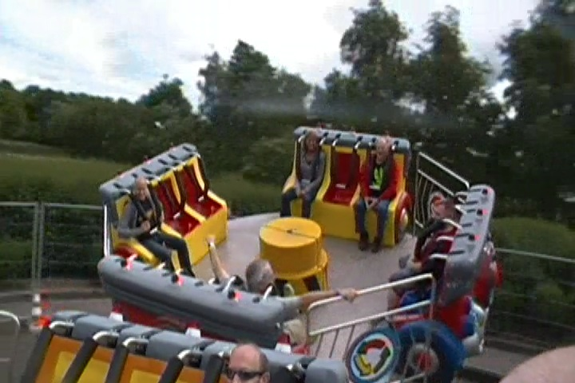
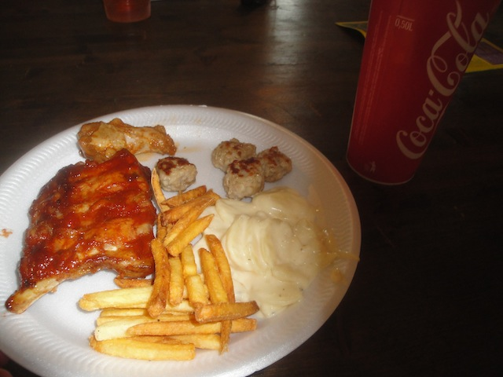
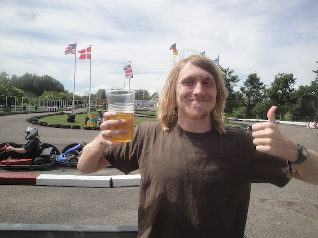

Sommerland Sjaelland is a fun little park in the middle of nowhere Denmark. Yeah, I know there’s a couple towns nearby, but this place did seriously feel isolated. I'm not sure exactly how popular the park is with the locals since we essentially had the park all to ourselves for a private event. But I’m sure that it’s fairly popular with locals since they apparently had special events for them including hunting for gold if you go often. But yeah. We got this park to ourselves. And let me tell you. That made us enjoy the park so much more. Because then we got to really explore the entire park in all its full detail instead of just credit whoring the place like we probably would’ve done if it was just a normal day to get the credits and then get the hell out of there. But I’m happy I got to check out the rest of the park out because it’s really fun and has a decent amount of stuff to do. Now don’t get me wrong. This isn’t some secret hidden gem that you’d never know was just so good, but you have to fly out to get here. But it is a fun little park with some fun rides, and when you have the entire park to yourself, it just makes the park that much better. It kind of makes me think what my opinion of certain small parks in the United States would be if I was able to visit the parks privately. But there’s not much point in thinking about that. Sommerland Sjaelland is a fun little small park that has a decent amount to do. It’s all a matter of how much are you going to do? Are you going to check out the park for all that it has? Or are you just going to credit whore this place and then move on?
Here are the reviews of all the Flat Rides at Sommerland Sjaelland. Now, I did get to check out Sommerland Sjaelland in more detail, but flat rides aren’t something that the park really specializes in. The only flat ride of significant that I wound up riding was this one spinning flat ride. And it wasn’t even that significant. I sort of just rode it to hang out with friends simply because it was there. But hey. It was fun. I noticed other people also doing some flying saucers ride. Cool. I don’t remember seeing any other flat rides, and honestly, it’s hard to see what else there is since there aren’t a ton of reports of this park and trying to navigate the Danish Website using Google Translate is honestly a real pain in the ass. I don’t think there’s too much else I’m missing though.

Fun, but nothing special.
Dark Rides
Yeah. Sommerland Sjaelland does have a dark ride. But it’s not exactly a high quality dark ride. You see, the one dark ride it has is basically a knock off Jungle Cruise that’s politically incorrect. This should be fun. And it is. This is one of those rides that’s so bad it’s good. It has a big stuffed King Kong in a cage, the waterfall gag that freaked me out the first time, but because it’s so common in Europe, is predictable, and of course, some very politically incorrect African stereotypes with them taming plastic crocodiles. If you want to mock the Jungle Cruise and see something politically incorrect, then this is a ride to ride.
“Stereotypes still hurt when we’re made of plastic.”
Water Rides
Sommerland Sjaelland doesn’t have any water rides.
Water Park
But Sommerland Sjaelland does have its very own water park. So you can cool off. Though I don’t think Denmark gets very hot. The water park did seem interesting. It certainly had this one slide that certainly got my attention. It’s a drop slide, except it’s got a really sharp transition that looks pretty cool. I’d give it a try depending on time and the weather.
I love just how sharp that drop is.
Dining
Sommerland Sjaelland put out a very nice lunch for us, serving us chicken wings, meatballs, french fries, and scalloped potatoes. Oh, and beer. You can’t forget about the beer and European Fanta. I’m not sure if this is something you can order in the park on your own visiting normally, but I really enjoyed the food they served me.

No matter how you slice it, it’s just meat and potatoes.
Theming and Other Attractions
Here are the reviews of all the other stuff at Sommerland Sjaelland. For theming, uh...there's none. Well, at least not anything special. Yeah, they have an America-themed area. But…come on. Anyways, let's move onto the positives. The other stuff. Sommerland Sjaelland is very much a European Park, fitting in well with lots of other fun stuff to do. First off, Go Karts. Yes, they do indeed have Go Karts here. And yeah. They may not be anything special, being something you can find at your local theme park as an up charge, or maybe even at a place like Golf’N’Stuff. But hey, I got to drink before driving these Go-Karts. That’s always fun. And because Sommerland Sjaelland is very much like nearly all the other European Parks, it has to have some cool obstacle courses, and a sh*tload of trampolines and bouncing pillows. Because those things are practically mandatory in Europe. And they are freaking awesome!! Especially those bouncing pillows. I wish more small parks in the U.S would pick these up. Grr. Stupid sue-happy American culture. But hey. You can do it at Sommerland Sjaelland, and it is a ton of fun. Oh, and I forgot to mention. They have self-operated Ziplines here. They’re not crazy or very big. But…come on!! Self operated ziplines!!! You can’t go wrong with that!! Give them a chance if you’re at Sommerland Sjaelland.

Just drinking my beer before driving the go karts. What? Do you have a problem with that? =)
In Conclusion
Sommerland Sjaelland may not be the best park ever, and most coaster enthusiasts probably aren’t going to stop on by, just focusing their efforts in Copenhagen at parks like Tivoli Gardens, and other bigger parks like that. And let’s keep it real. The people who do decide to head on out to Sommerland Sjaelland are most likely going to just be there for credit whoring. Hell, that’s the whole reason I went to the park. But the park had the park open just for us, showed us around, and I had a really good time exploring some of the other stuff that the park has to offer. Because at the end of the day, it is a family park for locals, they don’t have anything big at all and certainly no reason for a coaster enthusiast to travel out for. This park is not meant for you. But if you are credit whoring, and want to check out if they have anything else fun, well, it has a couple other rides that are fun if you want to check it out.
Enthusiast FAQs.
*Are there kiddy coaster restrictions? - No. There are no restrictions for VildBassen (at least that I know of).